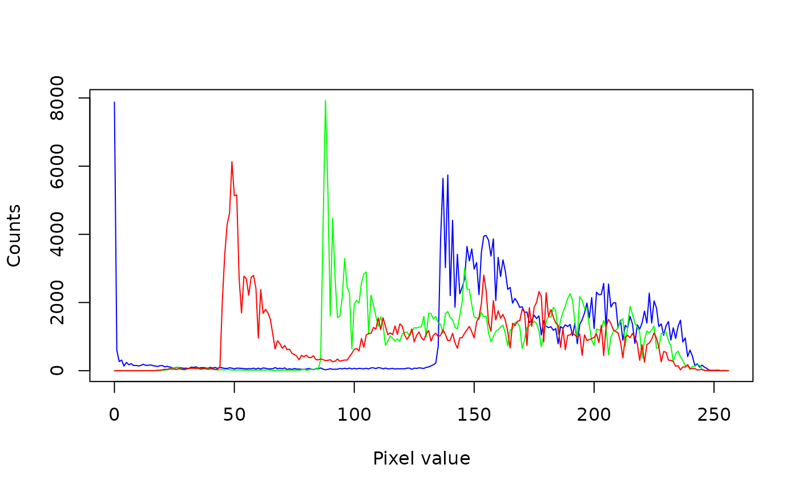

imhist computes (or plots) the multichannel histogram of
an Image object.
Arguments
- image
An
Imageobject.- nbins
An integer indicating the number of bins of the histogram (default: 256).
- range
The range of pixel values to include in the histogram (default: c(0, 256)). The lower boundary is inclusive but the higher one is exclusive.
- mask
A single-channel (GRAY) 8-bit (8U)
Imageobject with the same dimensions asimage. This can be used to mask out pixels that should not be considered when calculating the histogram (pixels set to 0 in the mask will be ignored during the histogram calculation).- plot
A logical indicating whether to plot the histogram (default: FALSE).
- col
A value or vector of any kind of R color specification compatible with
col2rgbrepresenting the color of the histogram for each image channel (default: c("blue", "green", "red", "black")).- xlab, ylab
Character strings for the axis labels (default: "Pixel value" for the x axis and "Counts" for the y axis).
- lty
A vector of line types, see
par.- ...
Further arguments passed to
matplot.
Value
If plot=FALSE, the function returns a m x n matrix,
with m = nbins and n equal to the number of channels in the
image + 1. The first column corresponds to the bin values. If
plot=TRUE, the function plots the histogram and returned the
aforementioned matrix silently.
Author
Simon Garnier, garnier@njit.edu
Examples
balloon <- image(system.file("sample_img/balloon1.png", package = "Rvision"))
imhist(balloon, plot = TRUE)
